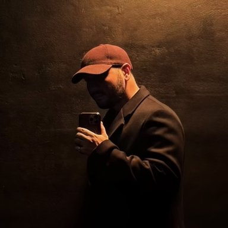

ML Scientist at QARL AI · Montréal
Ali Salimi Sadr
Machine Learning Engineer building real-time AI systems — from diffusion-based talking avatars to low-latency inference running in production.
- Writing code since
- 2012
- Robots shipped
- 300+
- Cards / month via OCR
- 10k+
- Inference speed-up
- 5×
01About
I started programming in 2012 through robotics, and earned a silver medal at the RoboCup Austrian Open 2014 (Rescue League). After studying Computer Engineering at QUT, I co-founded Roobin — an edtech startup that raised seed funding, shipped 300+ companion robots, and won a UNICEF Innovation Award.
I completed a Master's in AI at SBU and worked as an ML engineer at Azki, Iran's largest insurtech. I then moved to Canada for PhD studies in AI at Concordia, with coursework at Mila, later switching to an MSc in Computer Science. Since then I've worked at e-SKY and the Vector Institute, co-founded Qliqless, and today I build real-time interactive digital avatars as an ML Scientist at QARL AI.
02Experience
-
2025 — Now
-
2025
Vector Institute
Machine Learning Engineer Associate
Improved a multilabel text classifier by 8% F1 and sped up inference 5×. Built an ETL pipeline with LLM-based data synthesis for class imbalance, and shipped FastAPI microservices with CI/CD.
-
2024 — 2025
Qliqless
Co-founder
A conversational execution platform that replaces traditional UI with natural language. Built the NLU pipeline that turns user intent into real-time API calls — no buttons, no forms. Accepted into District 3 and V1 Studio.
-
2024 — 2025
e-SKY Solutions
Machine Learning Software Engineer
Launched a RAG-based chatbot that cut instructor workload by 20%, built a recommendation system that lifted engagement by 15%, and trained 10+ employees on AI tooling.
-
2022 — 2023
Azki
Machine Learning Engineer
Iran's largest insurtech. Led the vision team behind card OCR processing 10k+ cards a month, and contributed to the insurance chatbot handling 1k+ weekly inquiries — both still live in production.
-
2021 — 2023
RoboDoc Lab
ML & Robotics Lead, Human–Machine Interaction
Led ML and robotics development on intelligent assistive systems and human–robot collaboration.
-
2020 — 2022
Roobin
Co-founder & Technical Lead
An interactive Farsi-speaking social robot for K-12 education, with its own block-programming language (Roobickly). Led a team of 10, shipped 300+ units, and won a UNICEF Innovation Award.
-
2018 — 2020
IranDoc
ML Developer & Research Assistant
Built a face recognition system (95% accuracy across 1,000+ identities) and applied NLP for keyword extraction over 500+ documents a day.
03Education
-
2026 — Now
MSc, Computer Science Now
Concordia University · Montréal
Moved from the PhD program to an MSc in Computer Science, alongside full-time research and engineering work.
-
2023 — 2024
-
2020 — 2023
MSc, Artificial Intelligence
Shahid Beheshti University (SBU)
Developed a deep-RL planning method for autonomous visual navigation of a wheeled robot, trained and evaluated in Unity simulation. Published at ICCKE 2022.
-
2016 — 2020
BSc, Computer Engineering
QUT
Final project: Roobin, an interactive social robot with a block-programming language for K-12 education.
04Projects
05Publications & Honors
-
An Efficient Planning Method for Autonomous Navigation of a Wheeled-Robot Based on Deep Reinforcement Learning
A. Salimi Sadr, M. Khojasteh, H. Malek, A. Salimi-Badr · ICCKE
-
UNICEF Innovation Award
For Roobin, UNICEF Innovation Challenge Iran
-
Silver Medal, RoboCup Austrian Open
Rescue League
-
Top 1% of 4,200 teams, IEEEXtreme
International 24-hour programming competition
06Places I've been
Click the map to zoom